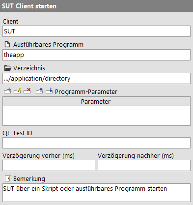
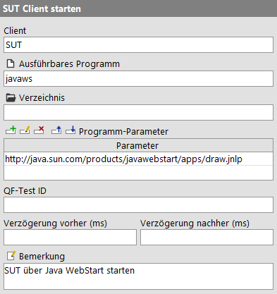
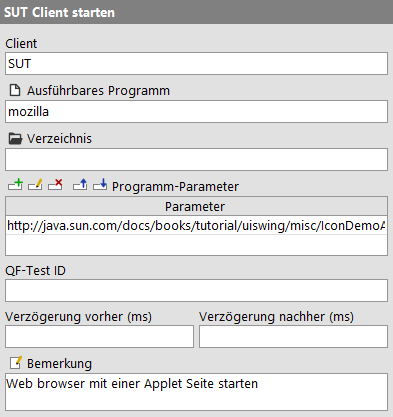
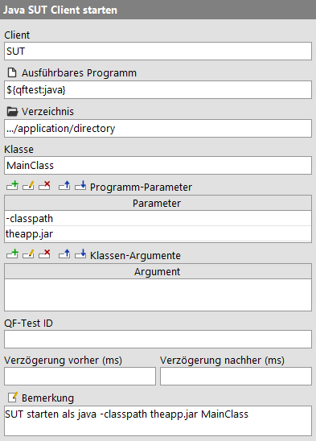

| Version 6.0.3 |
HinweisDer Erzeugung der Startsequenz - Schnellstart-Assistent ist das empfohlene Werkzeug, um Ihre Anwendung als SUT einzurichten. Als Resultat wird eine erweiterte Startsequenz erzeugt, die auch bereits für spätere Anforderungen vorbereitet ist.
Diese Kapitel enthält notwendige Details, falls die Startsequenz "von Hand" erzeugt werden soll.
Mit dem Schnellstart Wizard bietet QF-Test ein Hilfsmittel, um Sie Schritt für Schritt durch den Prozess zur Erstellung einer Startsequenz für Ihr SUT zu leiten. Informationen zum Schnellstart Wizard finden Sie im Kapitel Kapitel 3.
Trotzdem soll hier auch der "händische" Weg erklärt werden, wie Sie einen Startknoten für
Ihr SUT erstellen können. Es gibt im Wesentlichen zwei Methoden zum Start einer Java
Anwendung aus QF-Test als SUT. Die erste entspricht einem normalen java ...
Aufruf über die Kommandozeile, wobei es dabei Varianten zum Start einer Klasse oder einer
jar Datei gibt. Die Alternative ist ein Skript oder ein ausführbaren Programm, das dann
die Java VM startet. Indirekte Methoden wie der Start des SUT über ant
fallen ebenso in diese Kategorie wie Java WebStart und Applets, die im Java Plugin eines Web
Browsers ausgeführt werden.
Im Folgenden werden einige typische Konstellationen beispielhaft erläutert. Für nähere Informationen zu den auszufüllenden Werten folgen Sie bitte den entsprechenden Verweisen in den Referenzteil. Das Tutorial enthält weitere Beispiele zu diesem Thema.
Unabhängig davon wie Sie das SUT starten, der jeweilige Knoten sollte normalerweise direkt von einem 'Warten auf Client' Knoten mit identischem 'Client' Attribut gefolgt werden. Auch hierzu finden Sie weiterführende Informationen im Referenzteil.
Wird Ihre Anwendung im Normalfall durch ein Skript oder ein ausführbares Programm gestartet, erstellen Sie einen 'SUT Client starten' Knoten wie folgt:
|
|  | ||
|
| Abbildung 42.1: Starten des SUT aus einem Skript oder ausführbaren Programm | ||
PATH befindet, muss es mit vollem Pfad angegeben werden.
>ausgabe.log) beim java Aufruf entfernen, damit die
Ausgabe bei QF-Test ankommt und im Protokoll aufgezeichnet werden kann. Ebenso behindert
unter Windows ein vorangestellter start Befehl das Aufzeichnen der
Ausgaben des SUT.
Mit dem neuen Verbindungsmechanismus kann das SUT mittels Java WebStart direkt über QF-Test gestartet werden, ohne dass Änderungen am JNLP Deskriptor nötig sind (verwenden Sie also nicht »Extras«-»WebStart SUT Client Starter erstellen...«). Erstellen Sie stattdessen direkt einen 'SUT Client starten' Knoten wie folgt:
|
|  | ||
|
| Abbildung 42.2: Starten des SUT mittels Java WebStart | ||
javaws und befindet sich innerhalb des JDK
oder JRE. Sie werden vermutlich den vollständigen Pfad angeben müssen.
.javaws, in der zum Beispiel Einstellungen zu Debugging Ausgaben
vorgenommen werden können.
Applets können direkt im Browser getestet werden.
Hinweis Wenn Sie eine Lizenz besitzen, die auch Webtesten mit QF-Test erlaubt, und die, für Webtesten aktuell unterstützten Browser für Ihre Applet-Tests genügen, können Sie auch wie beim "normalen" Webtesten (Schnellstart Ihrer Anwendung) vorgehen.
|
|  | ||
|
| Abbildung 42.3: Starten des SUT als Applet in einem Web Browser | ||
firefox, iexplore,
chrome oder Safari, um nur einige zu
nennen. Eventuell müssen Sie den vollständigen Pfad angeben.
HinweisWichtige Hinweise zum Testen von Java Applets
Das Testen von Applets arbeitet nur verlässlich wenn
Die Prozedur qfs.web.browser.general.startAsNewProcess, die auch Verwendet wird, wenn
der Erzeugung der Startsequenz - Schnellstart-Assistent für die Erstellung der Startsequenz genutzt wird, sollte die
ersten beiden Punkte sicher stellen. Sie nutzt browserspezifische Parameter, um einen neuen Prozess zu
erzwingen und leere Profile, um blockierende Dialoge zu vermeiden.
WindowsUnter Windows 8 gibt es folgende Möglichkeiten den Internet Explorer zu veranlassen, als Desktop-Anwendung zu starten.
oder setzt direkt den entsprechenden Registry-Eintrag
HKEY_CURRENT_USER\Software\Microsoft\Internet Explorer\Main\AssociationActivationModeauf den Wert 2.
0 = Internet Explorer entscheiden lassen
1 = Immer mit Internet Explorer (das ist der Metro IE)
2 = Immer mit Internet Explorer auf dem Desktop
Weitere Hintergrundinformationen
Wie oben beschrieben, hilft die Prozedur qfs.web.browser.general.startAsNewProcess
einen neuen Prozess zu erzwingen. Jedoch soll hier kurz auf einige der verwendeten Techniken eingegangen
werden. Sie können aber auch direkt in den Code der Prozedur schauen.
WindowsEs gibt verschiedene Browser spezifische Kommandozeilenparameter für den Internet Explorer:
(Siehe auch http://msdn.microsoft.com/en-us/library/hh826025%28v=vs.85%29.aspx). Das Verhalten kann auch über die Registry erzwungen werden, jedoch ist die Steuerung per Kommandozeile weniger invasiv.
Hinweis Firefox hat eine eingebaute Funktion zur Wiederherstellung von Sessions, die zu Konflikten mit QF-Test führt. Wenn QF-Test ein Applet und damit den Browser beendet, wird dies von Firefox als Absturz gewertet. Beim nächsten Start öffnet Firefox einen Dialog in dem angeboten wird, die letzte Session fortzusetzen. Dieser Dialog kann von QF-Test nicht kontrolliert werden, so dass der Test nicht unbeaufsichtigt fortgesetzt werden kann.
Um dieses Problem zu umgehen kann man entweder immer mit einem leeren Profil starten oder ein neues
Benutzerprofil anlegen, wie unter http://kb.mozillazine.org/Profile_Manager beschrieben. Dann starten Sie Firefox aus QF-Test immer mit
diesem Benutzerprofil. Verwenden Sie hierzu den Befehl firefox -P <Profile>. Schalten Sie
anschließend das Wiederherstellen der Sitzung für dieses Profil aus. Dazu editieren Sie wie unter http://kb.mozillazine.org/Editing_configuration
beschrieben die Benutzereinstellungen. Sie müssen eine Option namens
browser.sessionstore.resume_from_crash anlegen und diese auf false setzen.
java -jar <Archiv>
Wird Ihre Anwendung im Normalfall durch ein Kommando der Form java -jar
<Archiv> gestartet, erstellen Sie einen 'Java SUT Client starten'
Knoten wie folgt:
|
|  |
||
|
| Abbildung 42.4: Starten des SUT aus einem jar Archiv | ||
${qftest:java} ist das java Programm mit dem
QF-Test gestartet wurde.
-jar und die zweite auf den
Namen des jar Archivs. Die Angabe des vollen Pfades ist nötig, wenn sich das Archiv
nicht im oben angegebenen 'Verzeichnis' befinden sollte.
java -classpath <Pfad> <Startklasse>
Wird Ihre Anwendung im Normalfall durch ein Kommando der Form java -classpath
<Pfad> <Startklasse> gestartet, erstellen Sie einen
'Java SUT Client starten' Knoten wie folgt:
|
|  | ||
|
| Abbildung 42.5: Starten des SUT über die Startklasse | ||
${qftest:java} ist das java Programm,
mit dem QF-Test gestartet wurde.
main() Methode), so wie er auch für
das java Kommando angegeben wird.
-classpath und die zweite auf
die Liste der jar Archive und Verzeichnisse, aus denen sich der Classpath
zusammensetzt. Für jar Archive, die sich nicht im oben angegebenen 'Verzeichnis'
befinden, muss dabei der volle Pfad angegeben werden. Dieses Argument kann sehr lang
werden und ist dadurch nur mühsam direkt in der Tabelle zu editieren. In Abschnitt 2.2.5 ist beschrieben, wie Sie komfortabel in einem Dialog arbeiten
können.
Wie bei Swing, JavaFX und SWT wird der Browser für ein Web-SUT als separater Prozess aus QF-Test heraus gestartet. Um Zugriff auf die Interna des Browsers und die darin dargestellte Webseite mit ihrem Document Object Model (DOM) zu erhalten, bettet QF-Test standard Browser wie Internet Explorer und Mozilla in eine eigene Hülle ein. Die Technologie zur Einbettung und für den Zugriff auf die Browser zeichnet sich aus durch besonders effizienten Zugriff auf das DOM, weit über die üblichen Browser-Schnittstellen hinaus und bietet dafür eine einheitliche Schnittstelle, welche die Unterschiede zwischen den Browsern versteckt. Dies ermöglicht QF-Test - und damit Ihnen - eine Anwendung in allen unterstützten Browsern und auf mehreren Plattformen mit nur einem Satz von Tests zu automatisieren.
Ein Browser wird mit Hilfe eines 'Web-Engine starten' Knotens gestartet.
|
|  |
||
|
| Abbildung 42.6: Starten des Browser-Prozesses | ||
Die zu testende Webseite kann danach über einen 'Browser-Fenster öffnen' Knoten geöffnet werden.
|
|  |
||
|
| Abbildung 42.7: Öffnen der Webseite im Browser | ||
Hinweis Beim Erstellen Ihrer Startsequenz mit dem Schnellstart-Assistenten - oder beim manuellen Setzen des Attributs 'Verzeichnis der Browser-Installation' - versuchen Sie QF-Test auf eine aktuelle Firefox oder Chrome Installation zu verweisen. Unter Linux kann der Standard-Browser Ihrer Installation an verschiedenen Orten installiert sein.
4.2+ QF-Test bietet die Möglichkeit, PDF Dokumente zu überprüfen. Dazu wird ein Client als separater Prozess aus QF-Test heraus gestartet. Um Zugriff auf die Interna des PDF Dokuments und die darin dargestellten Objekte zu erhalten, analysiert QF-Test das PDF Dokument in seinem eigenen Viewer.
|
|  |
||
|
| Abbildung 42.8: Öffnen eines PDF Dokuments | ||
Mit Hilfe des 'PDF Client starten' Knotens wird der Viewer gestartet und das PDF Dokument geöffnet.
Ausführliche Informationen finden Sie in Kapitel 16.
| Letzte Änderung: 6.9.2022 Copyright © 1999-2022 Quality First Software GmbH |